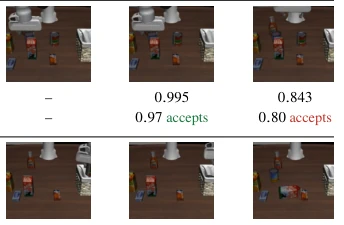
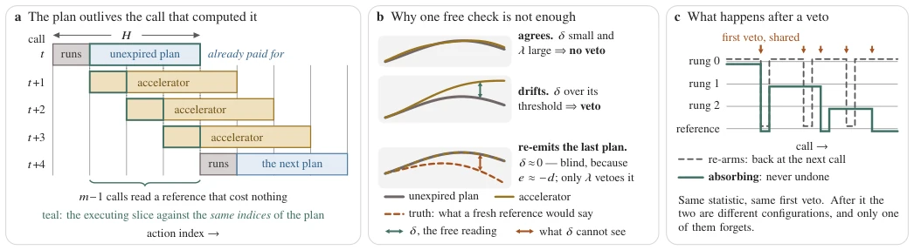
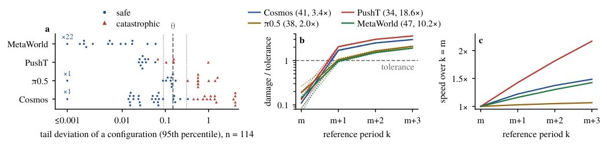

This paper pours cold water on training-free diffusion policies: it turns out those self-exonerating "gating" mechanisms are merely the accelerator's self-indulgence, almost entirely hallucinations in closed-loop tasks. The authors demonstrate with 114 configurations and 4 strategy families that traditional feature distance monitoring is not only useless but even worse than random guessing. Most ironically, even with an omniscient "Oracle" monitor, as long as it allows "retries", it will still crash. This paper's "Unexpired Plan" is indeed a clever free lunch, utilizing naturally existing redundant plans in chunked policies as references, saving compute while ensuring safety. But don't celebrate too early; this trick works for pure chunked policies, but once the policy becomes single-step output, this "free lunch" is gone. Moreover, this method runs very well in simulation, how about performance on real robots? The authors honestly say "not yet tested", after all, contact-rich tasks in simulation (like ManiSkill3) have already exposed many acceleration schemes.
Diffusion Policies (Diffusion Policies) perform excellently in robot control, but inference costs are high, making Training-free Acceleration (Training-free Acceleration) a hot topic. Existing acceleration methods (such as caching features, skipping denoising steps, reusing action chunks) generally rely on "gating" mechanisms to determine when caches can be reused. However, these gates are usually based on Feature Agreement (Feature Agreement) in feature space or external signals, proven to be weak predictors of closed-loop success rates. Literature [1] points out that consistency in feature space cannot guarantee closed-loop stability; Literature [13] also indicates that the Provenance (Provenance) of gating determines reliability, but existing work often focuses only on the signal itself, ignoring the key role of the "Response" Strategy (Response Strategy). This paper finds that existing monitoring schemes have fatal flaws: accelerators often "self-exonerate", i.e., verify each other using their own caches and thresholds, leading to failure in closed-loop (e.g., success rate plummeting from 97% to 6% in LIBERO-10 tasks). Furthermore, even with perfect local error signals, if the response strategy allows "retries" (Re-arming), error accumulation will still lead to disaster. Therefore, there is an urgent need for a monitoring scheme that is both free (no additional Forward Pass (Forward Pass)), truly reflects closed-loop risk, and possesses an "unforgettable" response mechanism.

Fig. 1. A gate cannot be read from its own log. One LIBERO-10 task, same initial states: each accelerator scores its own cached quantity against its own bar, so both certify every reuse, while one finishes every episode and the other none. The last rows read the quantity §IV monitors against one bar shared by all.
This paper proposes the "Unexpired Plan" (The Unexpired Plan) monitoring framework, the core idea is to utilize the naturally existing "Unexpired" reference plans in Chunked Policy (Chunked Policy) to monitor accelerator effectiveness without additional computation.
The overall process is as follows: at control call t, policy π generates action chunk A_t (length H), only executing the first H_exec steps.
Since H > H_exec, the remaining H - H_exec steps constitute the "Unexpired Plan" for the future m-1 calls.
1. Free Monitoring Signal (δ_free): For the next m-1 calls, directly compare the actions generated by the accelerator with the actions at corresponding indices in the "Unexpired Plan". Since this plan is the result of the previous round's reference evaluation, the comparison process requires no new Forward Pass (Forward Pass), achieving "free" monitoring. Formula (2) defines this deviation metric. 2. Redundancy Check (λ): Addressing the case where the accelerator may repeatedly output the same action chunk (causing δ_free to fail), a second free check λ is introduced, calculating the minimum distance between current actions and the past K action chunks. This can capture situations where the policy is "stagnant" or in a "dead loop". 3. Response Strategy (Absorbing Veto): This is the key innovation. Once monitoring triggers (Veto), the accelerator is "Retired" (Retire), i.e., permanently downgraded to a more conservative configuration within that round (such as directly running the reference policy), no longer allowing "retries" or "re-arming". This "unforgettable" mechanism prevents error accumulation. 4. Uncovered Call Handling: Among every m calls, the m-th call has no Unexpired Plan, at this time the reference policy must be run and executed as a baseline. This design ensures 100% coverage, while calculating the effective acceleration ratio S_eff via Formula (3). 5. Candidate Selection & Recovery: The system maintains an acceleration configuration "Ladder" (Ladder), sorted by cost. When Veto triggers, the system downgrades to the next layer configuration, until exhausted or recovered.

Fig. 2. The method. (a) A reference plan spans 𝐻indices while only 𝐻exec execute, so the next 𝑚−1 calls land on indices it has predicted and are read against them at no forward pass. (b) 𝛿is Eq. (2), 𝜆the repetition check of §IV-B; re-emitting the plan it is compared against reads 𝛿≈0, because 𝑒≈−𝑑. (c) A veto costs a rung before it costs the accelerator; a rung is a slower configuration.
Experiments were conducted on LIBERO, LIBERO-10, PushT, MetaWorld, and ManiSkill3 (the fifth unseen family), totaling 114 configurations. Baselines include feature caching, chunk retrieval, learned tolerance, uniform step reduction, etc. Evaluation metrics are closed-loop success rate (ΔSR) and effective acceleration ratio (S_eff).
Main Results: 1. Existing Monitoring Failure: Traditional gating (such as feature consistency) almost entirely fails in closed-loop, even worse than random reuse. Even using "Oracle" monitoring (knowing all Forward Passes (Forward Pass) and local errors), if "retry" strategy is adopted, success rate still drops by 20 points. 2. Unexpired Plan Effective: The method proposed in this paper maintains within ±2 points error range across four families, acceleration ratio reaches 1.55x-3.09x. Especially in ManiSkill3 (contact-rich tasks), other schemes completely fail, while this paper's method successfully pulls the task back to a safe range. 3. Response Strategy Key: Ablation studies show that changing "retry" to "Absorbing" (Absorbing) is the key to success, merely changing statistics without correct response strategy cannot solve the problem. 4. Generalization: On unseen ManiSkill3 tasks, it works without adjusting thresholds, proving the method's robustness.
Limitations: Currently verified only in simulation, not involving real robots; acceleration ratio upper limit is limited by chunk length m.

Fig. 3. (a) The tail deviation (Eq. (1)’s 95th percentile over an episode) of each of the 114 configurations of §III, catastrophic when it loses ten points or more; values below 0.001 pool at the left edge with their count; values within a marker width overprint. The dashed line is 𝜃, the dotted lines the range over which every verdict in Tables I and II holds. (b) Stepping the reference period 𝑘past full coverage: the share of the tolerance 𝑛𝑐that Eq. (4) spends at 𝑝𝑑=1, at the composite miss rate (solid) and across its interval (dotted), for Cosmos, 𝜋0.5, PushT and MetaWorld at tolerances of 41/38/34/47 chunks. (c) What the step buys, Eq. (3) at raw 𝑆of 3.4/2.0/18.6/10.2 before the ladder’s vetoes; PushT deploys at Table II’s 1.75×.